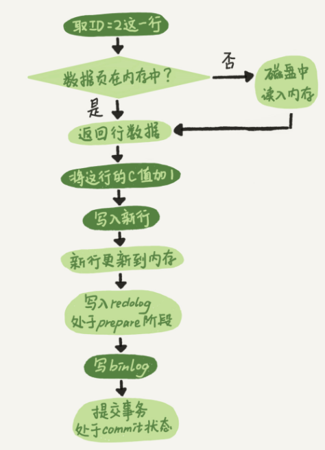

日志模块
mysql的日志模块有两个：重做日志（redo log）、归档日志（binlog）。
重做日志（redo log）
redo log 是 InnoDB 引擎特有的日志。就是 MySQL 里经常说到的 WAL 技术，WAL 的全称是 Write-Ahead Logging，它的关键点就是先写日志，再写磁盘。当有一条记录需要更新的时候，InnoDB 引擎就会先把记录写到 redo log里面，并更新内存，这个时候更新就算完成了。InnoDB 引擎会在适当的时候，将这个操作记录更新到磁盘里面。其原理：更新磁盘是需要先在海量数据中查找到需要更新的内容，导致实时更新会很慢。这样先写redo log，当InnoDB空闲时再根据redo log更新磁盘，提高响应速度。
- redo log 是固定大小的，比如可以配置为一组 4 个文件，每个文件的大小是 1GB，总共就可以记录 4GB 的操作。从头开始写，写到末尾就又回到开头循环写。
- 当redo log写满后，InnoDB会立即把一部分redo log更新到磁盘（会影响客户端的响应速度）。
- 当InnoDB空闲时，会更新所有redo log到磁盘。
有了 redo log，InnoDB 就可以保证即使数据库发生异常重启，之前提交的记录都不会丢失，这个能力称为 crash-safe。
归档日志（binlog）
binlog日志是mysql的 Server 层的日志。binlog 日志只能用于归档，并没有crash-safe能力。
binlog和redo log的不同点：
- redo log 是 InnoDB 引擎特有的；binlog 是 MySQL 的 Server 层实现的，所有引擎都可以使用。
- redo log 是物理日志，记录的是“在某个数据页上做了什么修改”；binlog 是逻辑日志，记录的是这个语句的原始逻辑，比如“给 ID=2 这一行的 c 字段加 1 ”。
- redo log 是循环写的，空间固定会用完；binlog 是可以追加写入的。“追加写”是指 binlog 文件写到一定大小后会切换到下一个，并不会覆盖以前的日志。
update的日志流程
执行下面语句：
mysql> create table T(ID int primary key, c int);
mysql> update T set c=c+1 where ID=2;
其内部流程如下图（图中浅色框表示是在 InnoDB 内部执行的，深色框表示是在执行器中执行的）：

- 执行器先找引擎取 ID=2 这一行。ID 是主键，引擎直接用树搜索找到这一行。如果 ID=2 这一行所在的数据页本来就在内存中，就直接返回给执行器；否则，需要先从磁盘读入内存，然后再返回。
- 执行器拿到引擎给的行数据，把这个值加上 1，比如原来是 N，现在就是 N+1，得到新的一行数据，再调用引擎接口写入这行新数据。
- 引擎将这行新数据更新到内存中，同时将这个更新操作记录到 redo log 里面，此时 redo log 处于 prepare 状态。然后告知执行器执行完成了，随时可以提交事务。
- 执行器生成这个操作的 binlog，并把 binlog 写入磁盘。执行器调用引擎的提交事务接口，引擎把刚刚写入的 redo log 改成提交（commit）状态，更新完成。
两阶段提交
redo log 的写入拆成了两个步骤：prepare 和 commit，这就是"两阶段提交"。其目的是为了让redo log和binlog在异常情况下保持一致（如果不做，在分别写redo log和binlog时程序crash，这两份日志会不一致）。
恢复数据库
让数据库恢复到半个月内任意一秒的状态，需要保证两件事：
- 备份系统中保存最近半个月的所有 binlog。
- 系统会定期做整库备份（一天一备，或者一周一备）。
恢复操作：
首先，找到最近的一次全量备份，从这个备份恢复到临时库；
然后，从备份的时间点开始，将备份的 binlog 依次取出来，重放到中午误删表之前的那个时刻。
这样你的临时库就跟误删之前的线上库一样了，然后你可以把表数据从临时库取出来，按需要恢复到线上库去。
小结
redo log 用于保证 crash-safe 能力。innodb_flush_log_at_trx_commit 这个参数设置成 1 的时候，表示每次事务的 redo log 都直接持久化到磁盘。这个参数我建议你设置成 1，这样可以保证 MySQL 异常重启之后数据不丢失。
sync_binlog 这个参数设置成 1 的时候，表示每次事务的 binlog 都持久化到磁盘。这个参数我也建议你设置成 1，这样可以保证 MySQL 异常重启之后 binlog 不丢失。